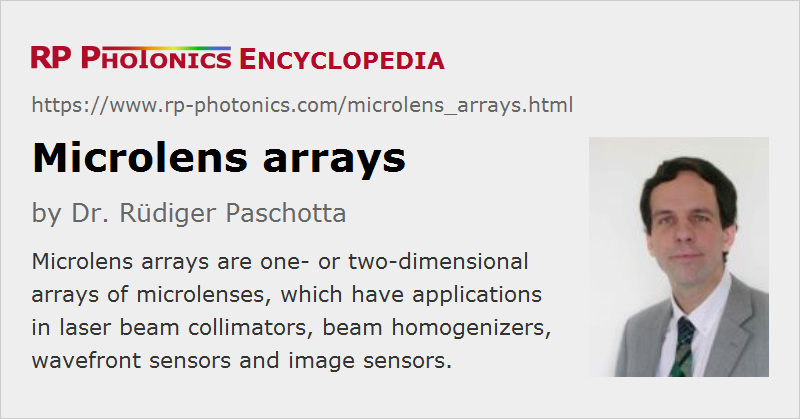

Microlens Arrays
Definition: one- or two-dimensional arrays of microlenses, used e.g. in Shack-Hartmann wavefront sensors
German: Mikrolinsen-Arrays
How to cite the article; suggest additional literature
Author: Dr. Rüdiger Paschotta
Microlens arrays (or micro-lens arrays) are one- or two-dimensional arrays of microlenses, i.e., rather small lenses (lenslets). In most cases, the lenslets form a periodic pattern either of square or hexagonal type, where the lens pitch is a few hundred micrometers, some tens of micrometers or even less.
The outer transverse shape is usually a square (e.g. 10 mm × 10 mm), or possibly a rectangle or circle. The number of microlenses can be thousands, possibly many thousands or even millions.
Microlens arrays are available as separate optical components. Some of them are provided in mounted form, i.e., surrounded by some mental or polymer part which fits into standard optical mounts. The lenses are often equipped with anti-reflection coatings on both sides. Sometimes, the lenses are realized as a thin transparent structured layer contacted to a flat homogeneous glass or semiconductor substrate.
There are also microlens arrays which are part of a larger assembly. For example, some CCD and CMOS image sensors contain one microlens per photodetector for increasing the light collection efficiency: all incident light should be concentrated to the active areas, which cover only part of the chip area.
Important Parameters of the Microlens Arrays
Such arrays can differ in a number of respects:
- The lenses are usually of circular type, but there are also arrays with cylindrical lenses. Note that even lenses focusing in both directions can have a square geometrical shape.
- They may be optimized for different spectral ranges, for example for visible light and/or parts of the near infrared. This affects the choice of optical material and the anti-reflection coatings.
- Different values of the lens pitch are available – from a few micrometers (only a few times an optical wavelength!) to hundreds of micrometers. A high accuracy of the lens positions is vital for some applications.
- In many cases, a large fill factor is desirable; this is the ratio of the total area of usable lens apertures to the total area of the array. Example, for a square array of circular lenses without any space between those, the fill factor would be π/4 ≈ 78.5%. Hexagonal arrays can reach a higher fill factor, but are not usable for all applications.
- Each lens is characterized by its diameter and focal length. The homogeneity of the focal length over the full device area can be important. For imaging applications, the amount of optical aberrations can also be relevant. In some cases, one uses aspheric lenses (e.g. made with reactive ion etching) for minimizing aberrations.
- The light throughput is limited by the fill factor and possibly by non-perfect transmissivity of the lenses due to parasitic absorption and/or reflections.
Fabrication of Microlens Arrays
Lens arrays are usually produced with a micro-fabrication method which forms all microlenses in a single production step. For example, one may employ a photolithographic method, where the lens pattern is defined by a photolithographic mask, which can be of grayscale or binary type. (Partially, one uses techniques which are common in semiconductor processing technology, and are called wafer level optics.) Particularly in the area of plastic optics, one applies mechanical techniques such as molding, e.g. of epoxy materials.
In some cases, the phenomenon of surface tension is used for obtaining smooth and repeatable lens surface shapes. The resulting surface is then generally non-spherical, and not necessarily ideal with respect to optical aberrations.
One can also apply methods of laser material processing, forming only one lenslet at a time or possibly some number of them, using multiple processing beams. Such methods provide substantial versatility and flexibility, but are generally slow and expensive.
Different optical materials can be used, such as fused silica, various other glasses or plastics (polymer materials). The choice of material must fit to the chosen production technique, but also has effects on various device properties, e.g. the usable spectral range and the mechanical and thermal stability.
Application of Microlens Arrays
Microlens arrays find applications in several areas of modern optics and optical products:
- A linear cylindrical lens array can collimate the radiation from all emitters of a diode bar (diode array), typically in the fast axis direction (FAC = fast axis collimator). Similarly, the output of a two-dimensional VCSEL array (see Figure 1) can be collimated with a 2D spherical lens array. In integrated optics, lens arrays can be used to collimate the output of arrays of waveguides.
- In a Shack–Hartmann wavefront sensor (see Figure 2), a microlens array is used to probe the wavefront orientation at many points across an area, e.g. the cross section of a laser beam. Such sensors are widely used in adaptive optics.
- Some kinds of beam homogenizers (optical diffusers) contain a microlens array.
- There are CCD and CMOS image sensors where each photodetector is equipped with a microlens for increasing the light collection efficiency. As such lenses do not perform an imaging function, their optical aberrations are not relevant.
- There are also imaging devices based on microlenses, used e.g. for photocopiers and photo cameras for smartphones. Also, one can make lightfield cameras.
- Lens arrays can be used for generating reference beams in the interferometric characterization of large lenses.
Suppliers
The RP Photonics Buyer's Guide contains 17 suppliers for microlens arrays. Among them:
Questions and Comments from Users
Here you can submit questions and comments. As far as they get accepted by the author, they will appear above this paragraph together with the author’s answer. The author will decide on acceptance based on certain criteria. Essentially, the issue must be of sufficiently broad interest.
Please do not enter personal data here; we would otherwise delete it soon. (See also our privacy declaration.) If you wish to receive personal feedback or consultancy from the author, please contact him e.g. via e-mail.
By submitting the information, you give your consent to the potential publication of your inputs on our website according to our rules. (If you later retract your consent, we will delete those inputs.) As your inputs are first reviewed by the author, they may be published with some delay.
See also: microlenses, Shack–Hartmann wavefront sensors
and other articles in the category general optics
|  |
If you like this page, please share the link with your friends and colleagues, e.g. via social media:
These sharing buttons are implemented in a privacy-friendly way!